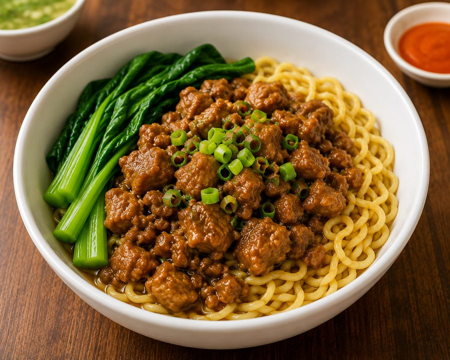

Warung Kaki Lima · Buka Tiap Hari
Semangkuk
Hangat, Rasa
Nggak Pernah Bohong.
Mie ayam giling, bakso urat kenyal, dan es seger racikan sendiri — dimasak fresh setiap hari, langsung dari gerobak ke meja kamu.
4Menu Andalan
100%Racik Sendiri
TiapHari Buka

Mulai
15K/ porsi
15K/ porsi
Racikan Kuah Kaldu Hari Ini
Cerita Kami
Dimasak Dekat, Dinikmati Hangat
Chicken Noodle Stall berangkat dari gerobak kecil dengan resep yang nggak pernah berubah: kaldu direbus lama, ayam dicincang tiap pagi, dan bakso dibentuk tangan langsung sebelum jam buka.
Nggak ada yang instan di sini — semua porsi dimasak setelah kamu pesan, supaya yang sampai di meja selalu dalam keadaan paling segar.
01
Bahan Dipilih Pagi Hari
Ayam, daging, dan sayur diambil segar setiap pagi sebelum gerobak buka.
02
Kaldu Direbus Perlahan
Kaldu bening direbus berjam-jam supaya rasanya keluar alami, tanpa micin berlebih.
03
Disajikan Begitu Dipesan
Mie direbus dan bakso dihangatkan setelah pesanan masuk — bukan dari stok yang lama menunggu.
Cara Pesan
Lapar? Order Aja Sekarang.
Chat langsung via WhatsApp, sebutkan menu & jumlah porsi — kami siapkan selagi hangat. Bisa datang langsung ke gerobak atau ambil lewat pesan-antar favorit kamu.
Jam Buka
Setiap hari
10.00 – 21.00
10.00 – 21.00
Lokasi
Depan Ruko Sejahtera,
Jl. Melati No. 12
Jl. Melati No. 12
Pesan Antar
WhatsApp & aplikasi
ojek online favorit
ojek online favorit